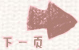

赵环宇
经过长时间的汽车旅途，我们到达中关村后开始团日活动，经过学长学姐对各自专业的详细简绍，我深刻的了解到当下主流专业的优劣势与前进，也让我明白了未来仍需不断努力，不断奋斗，提升自我，才能发扬大学生的优良品质。此外从提问作答环节中，心中一些疑惑得到解决，思想更加坚定。我期望在不久将来为中国的进步贡献力量。
王硕昊
这次活动是我们和一个研究生的班的互动，由几位优秀的研究生学长学姐，为我们介绍他们各自的经历，最后与他们交流。活动中我受益匪浅，尤其是在最后与学长们分组交流的那一会，真的了解到了好多有关学习方法还有各种考研、保研的经验。
